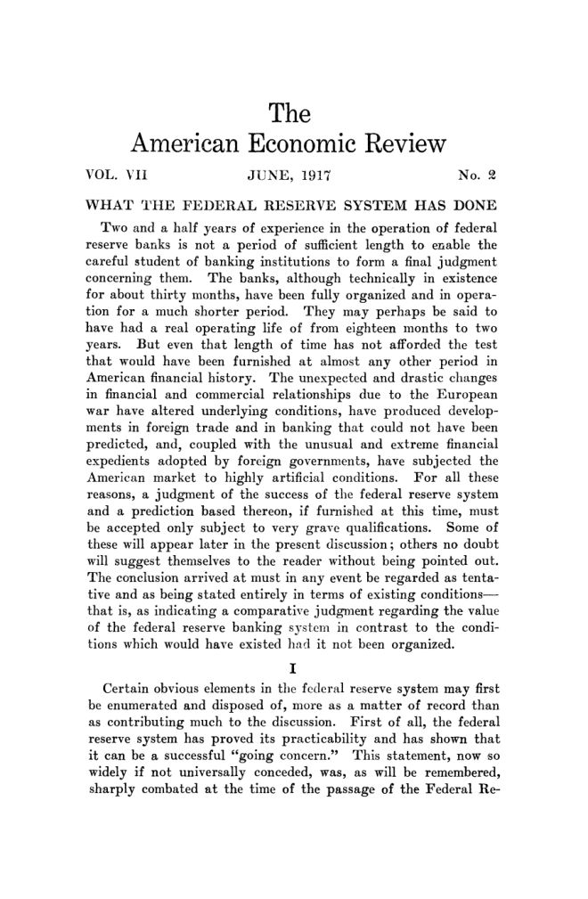

Willis, 1917: o que o Federal Reserve tinha feito?
Leitura: 8 min
Willis faz em 1917 o balanço do Federal Reserve: o sistema regional funcionou e a cobrança de cheques melhorou, mas o aceite bancário era em parte renovação, e o sistema ainda não fazia parte da vida dos negócios.


Em 1916, os doze bancos de reserva federal cobriram todas as despesas e ganharam 5% líquidos sobre o capital, mantendo-se em condição excepcionalmente forte. H. Parker Willis cita o número logo no início de seu balanço do sistema, publicado em junho de 1917, para encerrar uma discussão: se os bancos podiam ou não se pagar. A pergunta que lhe interessa é outra, e mais difícil.
Willis lembra que os bancos existiam tecnicamente havia cerca de trinta meses, mas operavam plenamente havia de dezoito meses a dois anos, e que a guerra europeia, com as medidas financeiras extremas dos governos estrangeiros, submetera o mercado americano a condições artificiais. O julgamento é, portanto, provisório e comparativo: o sistema contra o que teria havido sem ele.
O que já estava resolvido?
A primeira constatação é que o sistema provou ser um empreendimento viável, contra os que, na aprovação da lei, previam controle político e ineficiência; nem os mais interessados em encontrar corrupção ou nepotismo os encontraram. Willis admite que alguns bancos começaram com pessoal demais e que a lei impõe despesas gerais altas, mas diz que poucos os consideram caros para o serviço prestado. A Federal Reserve Board, em Washington, deu forma uniforme ao sistema com pouco atrito, e a moeda fornecida foi abundante e bem aceita, o que resolveu o lado de moeda de emergência da reforma bancária.
O modelo regional funcionou?
Na tramitação da lei, dizia-se que um banco central cooperativo não funcionaria por distritos, que não surgiria um mercado nacional de desconto e que os bancos regionais seriam fracos e dependentes. Willis responde que os bancos de reserva operaram como unidade, com taxas de desconto substancialmente semelhantes, ressalvadas as diferenças locais. Nunca foi preciso que um banco redescontasse para outro, mas o mecanismo existia, e ele não duvida de que teria funcionado.
Os bancos de reserva do Sul, menores em capital, ajudaram os bancos locais e moderaram as taxas de juros, e as comunidades agrícolas sentiram diminuir o aperto da época de movimentar as safras. Um banco central com filiais, argumenta, teria de abrir filiais quase tão caras quanto os bancos regionais; a economia ficaria em despesas gerais e no custo de emissão das notas. E os bancos distritais ficaram mais próximos das comunidades, que os viam como instituições suas, apesar das críticas à eleição das diretorias pelo voto igual de cada banco, que dava peso maior aos bancos pequenos.
O papel comercial mudou?
O teste decisivo era reformar o papel comercial americano, baseado na nota de assinatura única, e desenvolver o papel de duas assinaturas, o aceite, comum no exterior. A Board tentou estimular o aceite comercial, que chamava de trade acceptance, com taxas favoráveis e regulamentos. Mesmo assim, uma autoridade bancária simpática ao instrumento descrevia sua oferta em Nova York como insignificante. No outono de 1916, uma comissão de agentes do Federal Reserve listou setenta firmas que o haviam adotado, e Willis vê progresso real em algumas regiões.
O aceite bancário avançou mais. Restrito de início ao comércio exterior, foi estendido em 7 de setembro de 1916 ao comércio doméstico documentado. Cada banco membro podia aceitar até 50% do capital, e a Board autorizou quarenta e quatro bancos a ir até 100%. Willis estima o total de aceites de todos os bancos americanos entre US$ 250 milhões e US$ 300 milhões, e não dá peso à crítica de que o crescimento fosse anormal, fruto da nova posição credora do país: ele ocorreu e foi possibilitado pelo sistema.
O problema estava na qualidade. A Board decidiu que, dentro de uma linha de crédito estabelecida, os aceites podiam ser renovados ou substituídos por novos durante um período determinado. O aceite tendia, assim, a virar letra financeira, e banqueiros que financiavam fornecimentos a governos estrangeiros puseram no mercado cerca de US$ 125 milhões de aceites de renovação até 1º de janeiro de 1917. Os bancos de reserva chegaram a ter cerca de US$ 30 milhões deles.
Para Willis, “a ideia de renovação é em si repugnante à concepção da letra comercial”. (“The idea of renewal is itself repugnant to the conception of the commercial bill”)
Como talvez metade dos aceites disponíveis no mercado fosse desse tipo não comercial, o progresso fora menor do que se supunha. O mercado de desconto baseado em papel padronizado existia, conclui, mas só como um núcleo cercado de possibilidades incertas.
E os cheques e as reservas?
A lei também queria um sistema nacional de cobrança de cheques, contra a prática de manter cheques em trânsito para inflar saldos e de cobrar taxas variáveis para convertê-los em dinheiro. Depois de uma fase em que a Board deixou a questão aos bancos, sem sucesso, adotou no início do verão de 1916 um sistema compulsório de compensação e cobrança, com crédito diferido e cobrança ao par. Com a adesão de não membros, cerca de 15.000 bancos participavam, contra cerca de 7.625 membros, e grandes empresas relatavam economia de 50% nas despesas anuais com câmbio.
A transferência das reservas dos bancos das cidades para os bancos de reserva, que deveria terminar em 16 de novembro de 1917, avançou sem o menor choque. A estreiteza de crédito prevista não apareceu, talvez por causa das grandes importações de ouro, e Willis observa que muitos banqueiros já admitiam que o novo sistema não funcionaria sem uma exigência adequada de reservas.
O que faltava?
A parte mais incompleta era o exterior. A lei permitia filiais de bancos americanos fora do país e, depois, bancos estrangeiros controlados por grupos de membros, mas os banqueiros pouco se mexeram: aceitaram o negócio que lhes chegou pelos juros mais baixos do mercado doméstico, sem preparar a disputa pelo comércio exterior para quando a concorrência europeia voltasse. Willis lembra que a força britânica no comércio com a América do Sul e o Extremo Oriente se apoiava em bancos dispostos a financiar o movimento das mercadorias.
A questão final é a mais ampla: o sistema era um mecanismo de emergência ou parte integrante do mercado financeiro? O redesconto era pequeno pela facilidade de dinheiro no país, e o sistema vivia das operações de mercado aberto. Dos cerca de US$ 740 milhões investidos em 1916, só 28% eram papel redescontado. Alguns bancos de reserva recusavam negociar com particulares, mesmo com papel endossado por banco membro, e preferiam comprar por corretores. Para Willis, o sistema ainda não se incorporara à vida de negócios da comunidade, e essa era talvez sua maior questão.
A tarefa ainda pendente era fazer do sistema um fator da vida financeira do país, “servindo à comunidade não só em ‘emergências’, mas como instrumento permanente e de confiança”. (“serving the community not merely in ‘emergencies,’ but as a permanent and trusted instrument”)
Na minha leitura
Na minha leitura, o texto de Willis distingue com cuidado volume e qualidade. O aceite bancário cresceu, mas metade dele era renovação de crédito com forma de letra comercial; o sistema tinha lucro, mas pouca participação no redesconto. Medir uma reforma pelo instrumento que ela pretendia criar, e não só pelo tamanho do balanço, é um critério que serve para qualquer inovação financeira.
A pergunta final, se um banco central é mecanismo de emergência ou parte permanente do mercado, define também seu canal de atuação. Willis observa que, sem redesconto, o sistema dependia do mercado aberto para influenciar as taxas. A escolha entre esses canais, e entre manter distância ou contato com o público, continua a organizar a política monetária.
Glossário
- Redesconto
- empréstimo do banco de reserva a um banco membro, com títulos que este já descontou como garantia.
- Papel de assinatura única
- nota promissória emitida pelo tomador, sem aceite ou endosso de terceiro.
- Aceite comercial (trade acceptance)
- letra sacada pelo vendedor contra o comprador de mercadorias e aceita por este.
- Aceite bancário
- letra de câmbio aceita por um banco, que assume o pagamento no vencimento.
- Letra financeira
- letra sem operação comercial correspondente, usada para tomar crédito.
- Float
- valor dos cheques em trânsito, ainda não cobrados.
- Operações de mercado aberto
- compra e venda de títulos pelo banco de reserva por iniciativa própria.
Fontes
- What the Federal Reserve System Has Done — H. Parker Willis (pp. 269–288). JSTOR · Internet Archive (PDF)
- Edição completa, com os demais artigos: Nº 147 do Arquivo.
Documento em domínio público (EUA, publicado antes de 1931), via JSTOR Early Journal Content e Internet Archive. Resumo e comentário do autor deste site, sem afiliação com a American Economic Association. Encontrou um erro? Escreva: a correção é publicada no próprio texto, com data.
↑ Nº 147 · O Federal Reserve aos dois anos, a madeira e as associações de preço Tosdal, 1917: concorrentes podem trocar preços? →